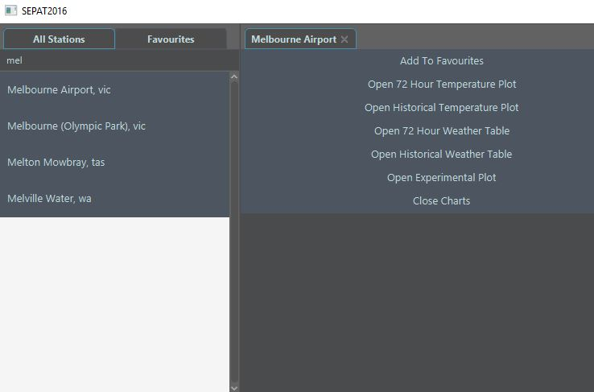
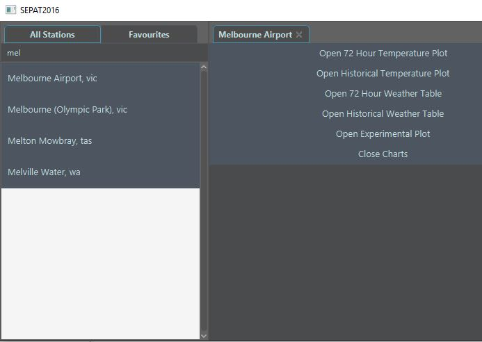

Navigation and Usage
After installation go ahead and open up the program.
This is the heart, or "home screen" of the program:

Through here, you can access the information of any weather station throughout Australia and the Antarctic region. At the top you will see a search bar, this is useful for finding a specific station. Just type in your desired location and the system should narrow the list down for you.

Once you have located the perfect location, click on the stations button to display the list of options available to you.
Another important feature to the program is the favourites system. In order to make searching for your desired stations easier in the future, you can click the button labelled Add To Favourites after finding a location.
This will add the station in your favourites tab:
After closing and opening up the program, you're favourites will be exactly where you let them. So don't worry about losing your list!
You've now learnt how to navigate through the solution efficiently, from here navigate to the link detailed Graphs and Charts to explore how to use the program to collect the desired weather information.